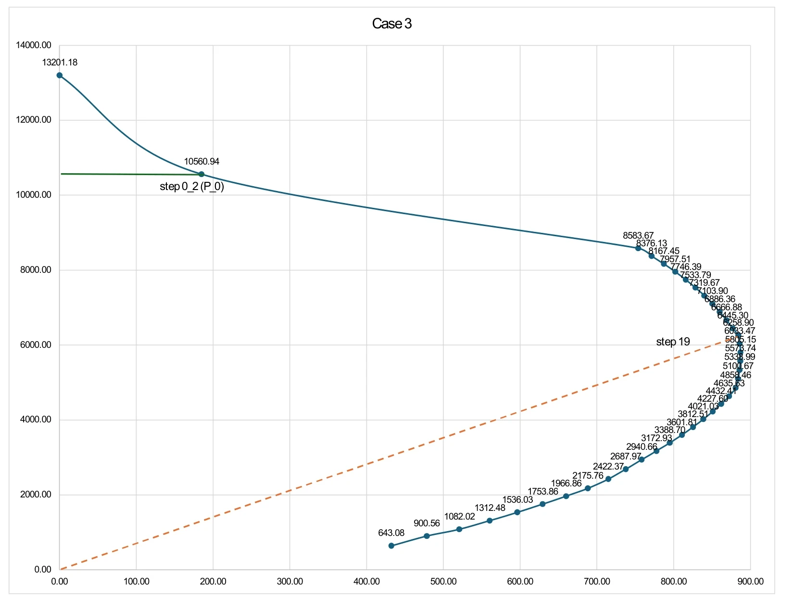

P–M INTERACTION OF AN RC COLUMN
3열 철근 기둥의 P–M 상관관계
3열로 배치한 철근콘크리트 기둥 단면에서 축력과 휨모멘트의 관계를 계산했습니다. 콘크리트 강도가 달라질 때 P–M 상관작용곡선이 어떻게 변하는지 비교했습니다.
- YEAR / SEMESTER
- 4학년 1학기 · 2026
- COURSE
- 철근콘크리트구조설계1
- CONTRIBUTION
- Study 과제
- SITE / SUBJECT
- 500 × 500 mm · 8-D22 기둥 단면

THE IDEA
생각의 출발점
기둥은 축력과 휨을 동시에 받습니다. 동일한 단면과 철근 배치를 기준으로 중립축 위치를 바꾸어 단면의 변형률과 내력을 계산하고, 각 상태를 P–M 평면에 연결해 저항 능력의 범위를 읽었습니다.
- 01
변형률에서 내력으로
평면 유지 가정과 변형률 적합조건으로 각 철근열의 변형률을 구했습니다. 철근 응력과 콘크리트 압축블록을 이용해 축력과 모멘트의 평형을 계산했습니다.
- 02
파괴 상태를 곡선으로 연결
압축 지배·균형 상태·인장 지배 영역의 차이를 살피고, 중립축 변화가 철근 항복과 단면 내력에 미치는 영향을 정리했습니다. 공칭강도와 강도감소계수를 고려하는 설계 관점도 함께 검토했습니다.
- 03
24·40·60 MPa의 비교
단면과 철근량을 유지한 채 콘크리트 강도를 바꾸었습니다. 압축 저항 영역의 확대를 비교하되, 고강도 조건에서는 압축블록과 극한변형률 가정의 변화도 함께 반영되는 점에 주목했습니다.
READING THE RESULTS
비교 분석의 기준
| 항목 | 과제 조건 |
|---|---|
| 기둥 단면 | 500 × 500 mm |
| 철근 | 8-D22 · 3열 배치 |
| 총 철근 면적 | 3,096.8 mm² |
| 열별 철근 면적 | 1,161.3 / 774.2 / 1,161.3 mm² |
| 철근 항복강도 | 400 MPa |
| 콘크리트 강도 | 24 / 40 / 60 MPa |
같은 단면의 재료 조건을 바꾸어 곡선의 변화를 비교한 Study입니다.
PROCESS & OUTCOME
과정과 결과
사진을 누르면 크게 볼 수 있습니다.